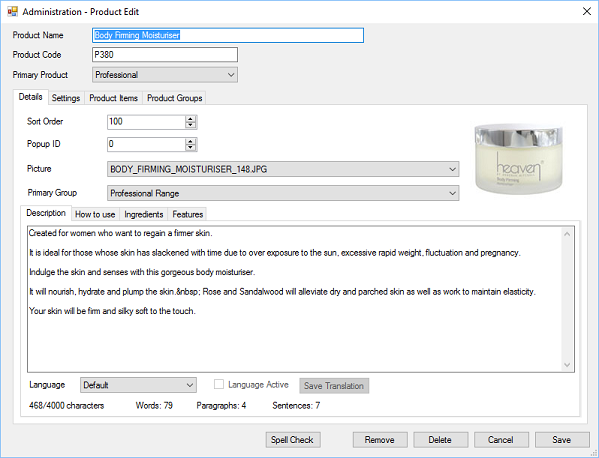

There are several different options when editing a product. Each product should have a
unique name, a valid product code (also known as SKU) and be assigned to a primary group
type.
The product details include a description, how to use, ingredients and features section, if used
these details will be shown within the website.

If you have multiple languages setup for your website you can translate the different sections,
select the language, once the translation is complete click the “Language Active” tick box
and then click “Save Translation”, if the translation is incomplete do not click the “Language
Active” tick box.
It is important that you click “Save Translation” when you have made changes, as this is not
done when you click the normal save button.
The save button will save all other settings other than tranlations.
You can delete a product if it has not been used within an invoice or order and as long as
there is no stock available. If it has been used within an invoice or order you can “Remove”
the product, this will permanently remove it, without deleting it.